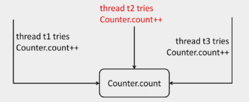
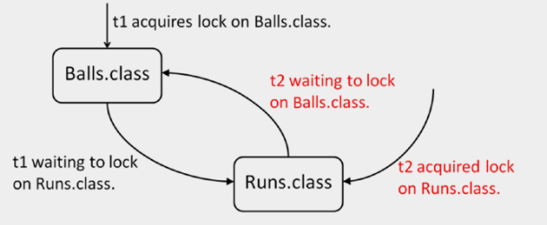
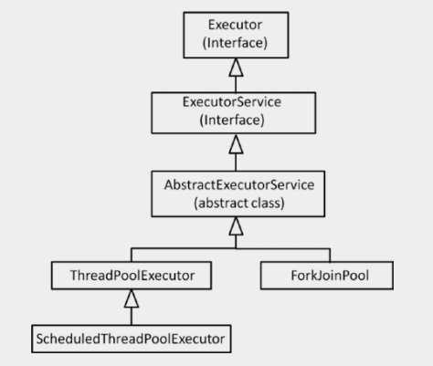
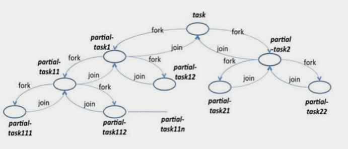

JAVA SE 8
Concorrência com Java
Concorrência está ganhando importância com o uso mais difundido de processadores multicore. A raiz latina da palavra concorrência significa "rodando juntos". Na programação, você pode ter vários segmentos rodando em paralelo em um programa executando diferentes tarefas ao mesmo tempo. Quando usada corretamente, a concorrência pode melhorar o desempenho e a capacidade de resposta do aplicativo e, portanto, é um recurso poderoso e útil. Neste capítulo, usamos os termos multi-thread e concorrência de forma intercambiável.
Desde o início, o Java suportava concorrência na forma de gerenciamento de threads de baixo nível, bloqueios, sincronização e APIs para concorrência. Desde o 5.0, o Java também suporta APIs de concorrência de alto nível em seu pacote java.util.concurrent. A partir da versão 8.0, o Java obteve ainda melhor suporte para concorrência com a introdução de fluxos paralelos.
Todos os códigos apresentado estão no reposítorio do github e poderão ser acessado através do link no final da página.
Criando Threads para Executar Tarefas Simultaneamente
As classes Thread e Object e a interface Runnable fornecem o suporte necessário para concorrência em Java. A classe Thread possui métodos como run(), start() e sleep() que são úteis para multi-threading . A classe Object tem métodos como wait() e notify() que suportam concorrência. Como cada classe em Java deriva da classe Object, todos os objetos possuem alguns recursos básicos de multi-threading. Por exemplo, você pode adquirir um bloqueio em qualquer objeto em Java (usando palavras-chave syncrhonized, que discutiremos mais adiante. No entanto, para criar um thread, esse suporte básico do Object não é útil. Para isso, uma classe deve estender a classe Thread ou implementar a interface Runnable. O Thread e o Runnable estão no pacote java.lang, portanto, você não precisa importar essas classes explicitamente para escrever programas de vários segmentos.
Logo abaixo a tabela mostra os Métodos Importantes na Classe Thread
| Método | Tipo de Método | Descrição |
|---|---|---|
| Thread currentThread() | Método Estático | Retorna a referência para o thread atual. |
| String getName() | Método Instancia | Retorna o nome do thread atual. |
| int getPriority() | Método Instância | Retorna o valor de prioridade do thread atual. |
| void join(), void join(long), void join(long, int) | Métodos InstÂncia Sobrecarrregado | O thread atual que invoca a junção no outro thread aguarda até que o outro thread seja concluído. Opcionalmente, você pode conceder o tempo limite em milissegundos (dado em long) ou o tempo limite em milissegundos, além de nanossegundos (dado em long e int). |
| void run() | Método Instância | Depois de iniciar um thread (usando o método start()), o O método run() será chamado quando o thread estiver pronto para executar. |
| void setName(String) | Método Instância | Altera o nome do thread para o nome dado no argumento. |
| void setPriority(int) | Método Instância | Define a prioridade do thread para o valor do argumento fornecido. |
| void sleep(long) | Métodos InstÂncia Sobrecarrregado | Faz com que o thread atual durma por milissegundos (dado em longo) ou por milissegundos e nanossegundos (dado em long e int). |
| void sleep(long, int) | Métodos InstÂncia Sobrecarrregado | Faz com que o thread atual durma por milissegundos (dado em longo) ou por milissegundos e nanossegundos (dado em long e int). |
| void start() | Método Instância | Inicia o segmento; A JVM chama o método run() do thread. |
| String toString() | Método Instância | Retorna a representação de string do thread; o string tem o nome, a prioridade e o grupo do thread. |
Criando Threads
Vamos agora criar threads usando a classe Thread e a interface Runnable. Discutiremos como criar threads de trabalho usando Callable e ExecutorService posteriormente.
Criando Threads Extendendo a Classe Thread
Para estender a classe Thread, você precisa sobrescrever o método run(). Se você não sobrescrever o método run(), o método run() padrão da classe Thread será chamado, o que não faz nada. Para sobrescrever o método run(), você precisa declará-lo como público; não recebe argumentos e tem um tipo de retorno nulo; em outras palavras, deve ser declarado como public void run().
Você pode criar um thread invocando o método start() em um objeto da classe Thread. Quando a JVM agenda a thread, ele moverá a thread para um estado executável e, em seguida, executará o método run(). Quando o método run() concluir sua execução e retornar, o thread será finalizado.
//MyThread.java
class MyThread extends Thread {
public void run() {
try {
sleep(1000);
}
catch (InterruptedException ex) {
ex.printStackTrace();
// ignore a InterruptedException - talvez essa seja a
// muito poucas exceções em Java que são aceitáveis para ignorar
}
System.out.println("In run(); thread name is: " + getName());
}
public static void main(String args[]) {
Thread myThread = new MyThread();
myThread.start();
System.out.println("In main(); thread name: " +
Thread.currentThread().getName());
}
}
Este programa imprime o seguinte:
In main(); thread name is: main In run(); thread name is: Thread-0
Neste exemplo, a classe MyThread estende a classe Thread. Você sobrescreveu o método run() nesta classe. Este método run() será chamado quando o thread for executado. Na função main(), você cria um novo thread e o inicia usando o método start(). Uma observação importante: você não invoca o método run() diretamente. Em vez disso, você inicia o thread usando o método start(); o método run() é chamado automaticamente pela JVM.
Para imprimir o nome do thread, você pode usar o método de instância getName(), que retorna uma String. Como main() é um método estático, você não tem acesso a essa referência. Assim, você obtém o nome da thread atual usando o método estático currentThread() na classe Thread (que retorna um objeto Thread).
Agora você pode chamar getName nesse objeto retornado. Como você verá mais tarde, o método main() também é executado como uma thread! No entanto, dentro do método run(), você pode chamar diretamente o método getName(): MyThread estende o Thread, então todos os membros da classe base também estão disponíveis em MyThread.
Criando Threads implementando Interface Runnable
Outra maneira de criar uma thread é implementar a interface Runnable. A classe Thread implementa a interface Runnable. A interface Runnable declara um único método, run() Assim, quando você implementa a interface Runnable, você precisa definir o método run(). Lembre-se Runnable não declara o método start(). Então, como você cria uma thread se você implementar a interface Runnable? Thread tem um construtor sobrecarregado, que usa um objeto Runnable como argumento.
//RunnableImpl.java
class RunnableImpl implements Runnable {
public void run() {
System.out.println("In run(); thread name is: " +
Thread.currentThread().getName());
}
public static void main(String args[]) throws Exception {
Thread myThread = new Thread(new RunnableImpl());
myThread.start();
System.out.println("In main(); thread name is: " +
Thread.currentThread().getName());
}
}
Este programa imprime:
In main(); thread name is: main In run(); thread name is: Thread-0Você está implementando o método run() neste programa. No entanto, para obter o nome da string, você deve seguir uma rota de retorno e obter o nome da thread com Thread.currentThread().getName().
No método main(), para criar um thread, você deve passar o objeto da classe RunnableImpl para o construtor Thread. O método start() inicia o thread e, posteriormente, a JVM chama o método run() do thread.
Sincronização de threads com Palavra-chave Synchronized
A palavra-chave synchronized do Java ajuda na sincronização de threads. Você pode usá-lo de duas formas: blocos sincronizados e métodos sincronizados. Por que precisamos usar a palavra-chave synchronized? Para evitar o problema das condições de corrida. Vamos discutir este assunto agora.
Condições de Corrida
Threads compartilham memória e podem modificar dados simultaneamente. Como a modificação pode ser feita ao mesmo tempo sem salvaguardas, isso pode levar a resultados não-intuitivos.
Quando dois ou mais threads estão tentando acessar uma variável e um deles quer modificá-la, você recebe um problema conhecido como uma condição de corrida (também conhecida como corrida de dados ou risco de corrida). O exemplo abaixo mostra um exemplo de uma condição de corrida.
//RaceCondition.java
// Esta classe expõe um contador acessível ao público
// para ajudar a demonstrar o problema das condições da corrida
class Counter {
public static long count= 0;
}
// Esta classe implementa a interface Runnable
// Seu método de execução incrementa o contador três vezes
class UseCounter implements Runnable {
public void increment() {
// incrementa o contador e imprime o valor
// do contador compartilhado entre os threads
Counter.count++;
System.out.print(Counter.count+ " ");
}
public void run() {
increment();
increment();
increment();
}
}
// Esta classe cria três threads
public class RaceCondition {
public static void main(String args[]) {
UseCounter c = new UseCounter();
Thread t1 = new Thread(c);
Thread t2 = new Thread(c);
Thread t3 = new Thread(c);
t1.start();
t2.start();
t3.start();
}
}
Neste programa, existe uma classe Counter que possui uma contagem de variáveis estáticas. No método run() da classe UseCounter, você incrementa a contagem chamando três vezes o método increment(). Você cria três threads na função main() na classe RaceCondition e a inicia. Você espera que o programa imprima de 1 a 9 seqüencialmente como os threads executam e incrementam os contadores. No entanto, quando você executa este programa, ele imprime nove valores inteiros, mas a saída se parece com lixo! Em uma amostra, obtivemos estes valores:
3 3 5 6 3 7 8 4 9
Observe que os valores geralmente serão diferentes toda vez que você executar este programa; quando o rodamos mais duas vezes, conseguimos essas saídas:
3 3 5 6 3 4 7 8 9 3 3 3 6 7 5 8 4 9
Então, qual é o problema?
A expressão Counter.count++ é uma operação de gravação e a próxima declaração System.out.print tem uma operação de leitura para Counter.count. Quando os três threads são executados, cada um deles tem uma cópia local do valor Counter.count e quando atualizam o contador com Counter.count++, eles não precisam refletir imediatamente esse valor na memória principal. Na próxima operação de leitura de Counter.count, o valor local de Counter.count é impresso.
Na imagem acima Threads t1, t2 e t3 tentando alterar a contagem de contador, causando uma condição de corrida
Portanto, este programa sofre com o problema de condição de corrida. Para evitar esse problema, você precisa garantir que um único thread faça as operações de gravação e leitura juntas (atomicamente). A seção de código que é comumente acessada e modificada por mais de um thread é conhecida como seção crítica. Para evitar o problema de condição de corrida, você precisa garantir que a seção crítica seja executada por apenas um thread por vez.
Como você faz isso? Ao adquirir um bloqueio no objeto usando a palavra-chave synchronized, que discutiremos agora. Apenas um único thread pode adquirir um bloqueio em um objeto de cada vez, e somente esse thread pode executar o bloco de código (ou seja, a seção crítica) protegida pelo bloqueio. Até então, os outros tópicos precisam esperar.
Blocos Sincronizados
Em blocos sincronizados, você usa a palavra-chave synchronized para uma variável de referência e a segue por um bloco de código. Um thread tem que adquirir um bloqueio na variável sincronizada para entrar no bloco; quando a execução do bloco é concluída, a thread libera o bloqueio. Por exemplo, você pode adquirir um bloqueio nessa referência se o bloco de código estiver dentro de um método não estático:
synchronized(this) {
// segmento de código protegido pelo bloqueio mutex
}
E se uma exceção for lançada dentro do bloco sincronizado? O bloqueio será liberado? Sim, independentemente de o bloco ser executado totalmente ou uma exceção ser lançada, o bloqueio será liberado automaticamente pela JVM. Com blocos sincronizados, você pode adquirir um bloqueio somente em uma variável de referência. Se você usar um tipo primitivo, receberá um erro do compilador. Vamos corrigir o problema da condição de corrida do exemplo anterior, adicionando um bloco sincronizado no método increment (), como em:
// na classe UseCounter
public void increment() {
// incrementa o contador e imprime o valor
// do contador compartilhado entre os threads
synchronized(this) {
Counter.count++;
System.out.print(Counter.count + " ");
}
}
Com essa alteração, o programa imprime valores de contagem incrementados corretamente:
1 2 3 4 5 6 7 8 9
No método increment(), você obtém um bloqueio na referência this antes de ler e gravar em Counter.count. Portanto, não é possível que mais de um thread execute essas instruções ao mesmo tempo.Como apenas um thread pode adquirir um bloqueio e executar o bloco de código de “seção crítica”, o contador é incrementado por apenas um thread em um determinado momento; Como resultado, o programa imprime os valores 1 a 9 corretamente.
Sem o bloco sincronizado, três threads diferentes modificariam livremente a variável e, portanto, você não obteria os valores 1 a 9 impressos corretamente (devido ao problema de condição de corrida que discutimos anteriormente).
Métodos Sincronizados
Um método inteiro pode ser declarado sincronizado. Nesse caso, quando o método declarado como sincronizado é chamado, um bloqueio é obtido no objeto no qual o método é chamado e é liberado quando o método retorna ao responsável pela chamada. Aqui está um exemplo:
public synchronized void assign(int i) {
val = i;
Agora o método assign() é um método sincronizado. Se você chamar o método assign(), ele obterá o bloqueio na referência this implicitamente e, em seguida, executará a declaração val = i ;. O que acontece se algum outro thread já tiver adquirido o bloqueio? Assim como os blocos sincronizados, se o thread não puder obter o bloqueio, ele será bloqueado e o thread aguardará até que o bloqueio fique disponível.
Um método sincronizado é equivalente a um bloco sincronizado se você incluir todo o corpo do método em um bloco sincronizado(this). Então, o método equivalente assign() usando blocos sincronizados é:
public void assign(int i) {
synchronized(this) {
val = i;
}
}
Você pode declarar métodos estáticos sincronizados. No entanto, qual é a variável de referência na qual o bloqueio é obtido? Lembre-se de que métodos estáticos não têm implícita essa referência. Métodos sincronizados estáticos adquirem bloqueios no objeto de classe. Cada classe é associada a um objeto do tipo Classe e você pode acessá-la usando a sintaxe ClassName.class. Por exemplo,
class SomeClass {
private static int val;
public static synchronized void assign(int i) {
val = i;
}
// mais membros ...
}
Nesse caso, o método de atribuição adquire um bloqueio no objeto SomeClass.class quando é chamado. Agora o método equivalente assign usando blocos sincronizados pode ser escrito assim:
class SomeClass {
private static int val;
public static void assign(int i) {
synchronized(SomeClass.class) {
val = i;
}
}
// mais membros ...
}
Você não pode declarar construtores sincronizados; isso resultará em um erro do compilador. Por exemplo, para:
class Synchronize {
pubmais métodos
}
Você obtém um erro:
Synchronize.java:2: modifier synchronized not allowed here
public synchronized Synchronize() { /* constructor body */}
Por que você não pode declarar os construtores sincronizados? A JVM assegura que apenas uma thread possa invocar uma chamada de construtor (para um construtor específico) em um determinado ponto no tempo. Portanto, não há necessidade de declarar um construtor sincronizado. No entanto, se você quiser, você pode usar blocos sincronizados dentro de construtores.
Vamos voltar ao exemplo RaceCondition. O método increment() na classe UseCounter pode ser reescrito como um método sincronizado também:
// declarando o incremento sincronizado em vez de usar
// uma instrução sincronizada para um bloco de código dentro do método
public synchronized void increment() {
Counter.count++;
System.out.print(Counter.count + " ");
}
Este programa imprime:
1 2 3 4 5 6 7 8 9
Este programa imprime a saída esperada corretamente.
Os iniciantes geralmente entendem mal que um bloco sincronizado obtém um bloqueio para um bloco de código. Na verdade, o bloqueio é obtido para um objeto e não para um pedaço de código. o bloqueio obtido é mantido até que todas as declarações nesse bloco concluam a execução.
Problemas de Threading
A programação concorrente em threads é repleta de armadilhas e problemas. Já discutimos as condições de corrida que ocorrem quando não usamos bloqueios na seção anterior. Nesta seção, vamos discutir mais três problemas de thread: deadlock, starvation e livelock.
Deadlocks
Obter e usar bloqueios é complicado e pode causar muitos problemas. Um dos problemas difíceis (e comuns) é conhecido como um deadlock. Um deadlock surge quando travamento de threads resultam em uma situação em que não pode prosseguir e, assim, esperar indefinidamente para que os outros terminem. Segundo, um thread adquire um bloqueio no recurso r1 e aguarda para adquirir outro no recurso r2. Ao mesmo tempo, digamos que há outro thread que tem já adquirido r2 e está esperando para obter um bloqueio em r1. Nenhum dos threads pode prosseguir até que o outro libere o bloqueio, o que nunca acontece - então eles estão presos em um deadlock.O proximo exemplo mostra como essa situação pode surgir (usando o exemplo do jogo Cricket).
//DeadLock.java
// A classe Balls possui um membro de dados acessível globalmente para armazenar o número de bolas lançadas
class Balls {
public static long balls = 0;
}
// A classe Runs possui um membro de dados acessível globalmente para armazenar o número de execuções pontuadas
class Runs {
public static long runs = 0;
}
// A classe Counter possui dois métodos - IncrementBallAfterRun e IncrementRunAfterBall.
// Para demonstrar o deadlock, chamamos esses dois métodos no método run, para que
// o bloqueio pode ser solicitado na ordem oposta nesses dois métodos
class Counter implements Runnable {
// este método incrementa a variável primeiro e depois incrementa a variável balls
// como essas variáveis são acessíveis a partir de outros threads,
// precisamos adquirir um bloqueio antes de processá-los
public void IncrementBallAfterRun() {
// como estamos atualizando a variável primeiro, bloqueie primeiro o Runs.class
synchronized(Runs.class) {
// bloqueia Balls.class antes de atualizar a variável balls
synchronized(Balls.class) {
Runs.runs++;
Balls.balls++;
}
}
}
public void IncrementRunAfterBall() {
// já que estamos atualizando a variável balls primeiro; então primeiro bloqueie Balls.class
synchronized(Balls.class) {
// adquire bloqueio no Runs.class antes de atualizar a variável de execução
synchronized(Runs.class) {
Balls.balls++;
Runs.runs++;
}
}
}
public void run() {
// chame esses dois métodos que adquirem bloqueios em ordem diferente
// dependendo da programação do encadeamento e da ordem de aquisição do bloqueio,
// um impasse pode ou não surgir
IncrementBallAfterRun();
IncrementRunAfterBall();
}
}
public class DeadLock {
public static void main(String args[]) throws InterruptedException {
Counter c = new Counter();
// cria dois threads e inicia-os ao mesmo tempo
Thread t1 = new Thread(c);
Thread t2 = new Thread(c);
t1.start();
t2.start();
System.out.println("Waiting for threads to complete execution...");
t1.join();
t2.join();
System.out.println("Done.");
}
}
Se você executar este programa, o programa poderá ser executado corretamente ou poderá travar e nunca terminar (a ocorrência de deadlock neste programa depende de como os threads são agendados).
D:\> java DeadLock Waiting for threads to complete execution... Done. D:\> java DeadLock Waiting for threads to complete execution... [deadlock – user pressed ctrl + c to terminate the program] D:\> java DeadLock Waiting for threads to complete execution... Done.
Neste exemplo, existem duas classes, Balls e Runs, com membros estáticos chamados de balls e runs. A classe Counter possui dois métodos, IncrementBallAfterRun() e IncrementRunAfterBall(). Eles adquirem bloqueios na Balls.class e Runs.class na ordem oposta. O método run() chama esses dois métodos consecutivamente. O método main() na classe DeadLock cria dois threads e os inicia. Quando os threads t1 e t2 executa, eles invocam os métodos IncrementBallAfterRun e IncrementRunAfterBall. Nestes métodos, os bloqueios são obtidos em ordem oposta. Pode acontecer que t1 adquira um bloqueio em Runs.class e espere para obter um bloqueio em Balls.class. Enquanto isso, o t2 pode ter adquirido o Balls.class e agora estará esperando para adquirir um bloqueio no Runs.class. Portanto, este programa pode levar a um deadlock.

A figura acima mostra Impasse(Deadlock) entre os threads t1 e t2
Não se pode garantir que este programa leve a um deadlock toda vez que você executar este programa. Por quê? Você nunca sabe a sequência na qual os threads são executados e a ordem em que os bloqueios são adquiridos e liberados. Por esta razão, tais problemas são considerados não-determinísticos, e tais problemas não podem ser reproduzidos consistentemente.
Existem diferentes estratégias para lidar com deadlocks, como prevenção, revogação ou detecção de deadlock:
- Os deadlocks podem surgir no contexto de vários bloqueios.
- Se vários bloqueios forem adquiridos na mesma ordem, um deadlock não ocorrerá; no entanto, se você adquiri-los em uma ordem diferente, os deadlocks podem ocorrer.
- Deadlocks (assim como outros problemas de multi-threading) são não-determinísticos; você não pode reproduzir consistentemente deadlocks.
Evite adquirir vários bloqueios. Se você deseja adquirir vários bloqueios, certifique-se de que eles sejam adquiridos na mesma ordem em todos os lugares para evitar conflitos.
Livelocks
Para ajudar a entender os livelocks, vamos considerar uma analogia. Suponha que existem dois carros robóticos que são programados para dirigir automaticamente na estrada. Há uma situação em que dois carros robóticos alcançam as duas extremidades opostas de uma ponte estreita. A ponte é tão estreita que apenas um carro pode passar de cada vez. Os carros robóticos são programados de tal forma que esperam que o outro carro passe primeiro. Quando ambos os carros tentam entrar na ponte ao mesmo tempo, a seguinte situação pode acontecer: cada carro começa a entrar na ponte, percebe que o outro carro está tentando fazer o mesmo e inverte! Note que os carros continuam se movendo para frente e para trás e, assim, aparecem como se estivessem fazendo muito trabalho, mas não há progresso feito por nenhum dos carros. Esta situação é chamada de livelock.
Considere dois threads t1 e t2. Suponha que o thread t1 faça uma alteração e o thread t2 desfaça essa alteração. Quando ambos os threads t1 e t2 funcionar, parecerá que muito trabalho está sendo feito, mas nenhum progresso é feito. Essa situação é chamada de livelock em threads.
A semelhança entre livelocks e deadlocks é que o processo “trava” e o programa nunca termina. No entanto, em um deadlock, os threads estão presos no mesmo estado, aguardando que outro (s) thread (s) liberem um recurso compartilhado; em um livelock, os threads continuam executando uma tarefa, e há uma mudança contínua nos estados do processo, mas o aplicativo como um todo não faz progresso.
Lock Starvation
Considere a situação em que vários threads têm prioridades diferentes designadas a eles (no intervalo de prioridade mais baixa, 1, para prioridade mais alta, 10, que é o intervalo permitido para prioridade de threads em Java). Quando um bloqueio está disponível, o programador de thread dará prioridade aos threads com alta prioridade sobre baixa prioridade.
Se houver muitos threads de alta prioridade que desejem obter o bloqueio e também manter o bloqueio por longos períodos de tempo, quando os threads de baixa prioridade terão a chance de obter o bloqueio? Em outras palavras, em uma situação onde threads de baixa prioridade "passam fome" por um longo tempo tentando obter o bloqueio é conhecido como lock starvation.
Usando o Pacote java.util.concurrent.atomic
O pacote java.util.concurrent tem dois subpacotes: java.util.concurrent.atomic e java.util.concurrent.locks. Nesta seção, discutiremos variáveis atômicas no pacote java.util.concurrent.atomic.
Muitas vezes você pode ver código que adquire e libera bloqueios para implementar operações primitivas/simples como incrementar uma variável, decrementar uma variável e assim por diante? (Nós já vimos um exemplo no incremento de uma variável inteira quando discutimos a palavra-chave synchronized anteriormente ).
Adquirir e liberar bloqueios para essas operações primitivas não é eficiente. Em tais casos, o Java fornece uma alternativa eficiente na forma de variáveis atômica.
Aqui está uma lista de algumas das classes deste pacote e sua breve descrição:
- AtomicBoolean: Valor booleano atomicamente atualizável.
- AtomicInteger: valor int atomicamente atomizado; herda da classe Number.
- AtomicIntegerArray: um array int no qual os elementos podem ser atualizados atomicamente.
- AtomicLong: valor long atomicamente atualizável; herda da classe Number.
- AtomicLongArray: Um long array no qual os elementos podem ser atualizados atomicamente.
- AtomicReference<V>: uma referência de objeto atomicamente atualizável do tipo V.
- AtomicReferenceArray<E>: Um array atomicamente atualizável que pode conter referências de objetos do tipo E (E refere ao tipo base de elementos).
Apenas AtomicInteger e AtomicLong se estendem da classe Number, mas não do AtomicBoolean. Todas as outras classes no subpacote java.util.concurrent.atomic herdam diretamente da classe Object
Das classes no subpacote java.util.concurrency.atomic, AtomicInteger e AtomicLong são as mais importantes. Logo abaixo a tabela lista os métodos importantes na classe AtomicInteger. (Os métodos no AtomicLong são análogos a estes).
| Método | Descrição |
|---|---|
| AtomicInteger() | Cria uma instância do AtomicInteger com o valor inicial 0. |
| AtomicInteger(int initVal) | Cria uma instância do AtomicInteger com o valor inicial initVal. |
| int get() | Retorna o valor inteiro mantido neste objeto. |
| void set(int newVal) | Redefine o valor inteiro contido neste objeto para newVal. |
| int getAndSet(int newValue) | Retorna o intvalue atual mantido neste objeto e define o valor contido neste objeto como newVal. |
| boolean compareAndSet(int expect, int update) | Compara o valor int deste objeto com o valor esperado e, se eles são iguais, define o valor int deste objeto para o valor de atualização. |
| int getAndIncrement() | Retorna o valor atual do valor inteiro neste objeto e incrementa o valor inteiro neste objeto. Semelhante ao comportamento de i ++ onde i um int. |
| int getAndDecrement() | Retorna o valor atual do valor inteiro neste objeto e decrementa o valor inteiro neste objeto. Semelhante ao comportamento de i - onde i é um int. |
| int getAndAdd(int delta) | Retorna o valor inteiro mantido neste objeto e adiciona o valor delta dado ao valor inteiro. |
| int incrementAndGet() | Incrementa o valor atual do valor inteiro neste objeto e retorna esse valor. Semelhante ao comportamento de ++ i onde i é um int. |
| int decrementAndGet() | Decrementa o valor inteiro atual neste objeto e retorna esse valor. Semelhante ao comportamento de --i, onde i é um int. |
| int addAndGet(int delta) | Adiciona o valor delta ao valor atual do inteiro neste objeto e retorna esse valor. |
| int intValue() long longValue() float floatValue() double doubleValue() - | Converte o valor int atual do objeto e o retorna como valores int, long, float ou double. |
Vamos experimentar um exemplo para entender como usar o AtomicInteger ou o AtomicLong. Suponha que você tenha um valor de contador que seja público e acessível por todos os threads. Como você atualiza ou acessa esse valor de contador comum com segurança sem introduzir o problema de condição de corrida (discutido anteriormente neste capítulo)? Obviamente, você pode usar a palavra-chave synchronized para garantir que a seção crítica (o código que modifica o valor do contador) seja acessada por apenas um thread em um determinado ponto no tempo. A seção crítica será muito pequena, como em:
public void run() {
synchronized(SharedCounter.class) {
SharedCounter.count++;
}
}
No entanto, este código é ineficiente, uma vez que adquire e libera o bloqueio de cada vez apenas para incrementar o valor count. Alternativamente, se você declarar count como AtomicInteger ou AtomicLong (o que for adequado). As classes como AtomicInteger não usam um bloqueio; em vez disso, eles usam internamente variáveis voláteis e um mecanismo de baixo nível conhecido como Compare-and-Set (CAS). Por esse motivo, usar AtomicInteger e classes relacionadas é mais rápido do que usar bloqueios usando a palavra-chave synchronized.
//AtomicVariableTest.java
import java.util.concurrent.atomic.AtomicInteger;
// Classe para demonstrar como números inteiros "normais" (isto é, thread inseguro) são mutantes
// e os números inteiros "atômicos" (ou seja, seguros para threads) são diferentes:
// A mutação de um objeto inteiro compartilhado sem bloqueios pode resultar em uma condição de corrida;
// no entanto, a mutação de um AtomicInteger compartilhado não resultará em uma condição de corrida.
class Counter {
public static Integer integer= new Integer(0);
public static AtomicInteger atomicInteger= new AtomicInteger(0);
}
class AtomicVariableTest {
static class Incrementer extends Thread {
public void run() {
Counter.integer++;
Counter.atomicInteger.incrementAndGet();
}
}
static class Decrementer extends Thread {
public void run() {
Counter.integer--;
Counter.atomicInteger.decrementAndGet();
}
}
public static void main(String []args) throws InterruptedException {
Thread incremeterThread[] = new Incrementer[1000];
Thread decrementerThread[] = new Decrementer[1000];
for(int i = 0; i < 1000; i++) {
incremeterThread[i] = new Incrementer();
decrementerThread[i] = new Decrementer();
incremeterThread[i].start();
decrementerThread[i].start();
}
for(int i = 0; i < 1000; i++) {
incremeterThread[i].join();
decrementerThread[i].join();
}
System.out.printf("Integer value = %d AtomicInteger value = %d ",
Counter.integer, Counter.atomicInteger.get());
}
}
A saída real depende do agendamento de threads. Em execuções diferentes, imprimiu as seguintes saídas:
Integer value = -2 AtomicInteger value = 0 Integer value = 2 AtomicInteger value = 0 Integer value = -1 AtomicInteger value = 0 Integer value = -1 AtomicInteger value = 0 Integer value = 0 AtomicInteger value = 0
Vamos analisar esse programa. A classe Counter possui dois membros de dados - um do tipo Integer e outro do tipo AtomicInteger - com o mesmo valor inicial 0. Existem duas classes de Thread. A classe Incrementer tem o método run() que incrementa os valores Integer e AtomicInteger. Por outro lado, a classe Decrementer possui o método run() que diminui os valores Integer e AtomicInteger.
Nesta saída, observe que o incremento do objeto Integer pode resultar em uma condição de corrida: o valor final de Integer ou AtomicInteger após incrementar e decrementar um número igual de vezes deve ser sempre 0 - se não tivermos uma condição de corrida. Como você pode observar a partir da saída, às vezes para o objeto Integer é 0 (ou seja, sem condição de corrida), mas na maioria das vezes não é igual a 0 (o que significa que tem condição de corrida). No entanto, para AtomicInteger, o resultado é sempre zero (o que significa que não tem condição de corrida). Em outras palavras, este programa mostra que é seguro manipular um valor AtomicInteger sem nenhum bloqueio.
Usando Coleções java.util.concurrent
Existem muitas classes e interfaces no pacote java.util.concurrent que fornecem APIs de alto nível para programação concorrente. Nesta seção, discutiremos principalmente as classes de sincronizador fornecidas neste pacote. Em seguida, abordaremos brevemente as importantes classes de coleções concorrentes fornecidas no pacote java.util.concurrent.
Você já entende as construções de concorrência de baixo nível, como o uso da palavra-chave synchronized usando interfaces Runnable para criar threads. No caso de um recurso compartilhado que precisa ser acessado por vários threds, o acesso e as modificações no recurso compartilhado precisam ser protegidos.
Quando você usa a palavra-chave synchronized, você usa mutexes(exclusão mútua) para sincronizar entre threads para acesso compartilhado seguro. Os threads também costumam precisar coordenar suas execuções para concluir uma tarefa maior de nível superior. É possível construir abstrações de alto nível para sincronização de threads. Essas abstrações de alto nível para sincronizar atividades de dois ou mais threads são conhecidas como sincronizadores. Sincronizadores usam internamente as APIs de baixo nível existentes para coordenação de threads.
Os sincronizadores fornecidos na biblioteca java.util.concurrent e seus usos são:
- Um semáforo controla o acesso a recursos compartilhados. Um semáforo mantém um contador para especificar o número de recursos que o semáforo controla.
- CountDownLatch permite que um ou mais threads aguardem a conclusão de uma contagem regressiva.
- A classe Exchanger destina-se à troca de dados entre dois threads. Essa classe é útil quando dois threads precisam sincronizar entre si e trocar dados continuamente.
- O CyclicBarrier ajuda a fornecer um ponto de sincronização onde os threads podem precisar aguardar em um ponto de execução predefinido até que todos os outros threads atinjam esse ponto.
- O Phaser é um recurso útil quando poucos threads independentes precisam trabalhar em fases para concluir uma tarefa.
CyclicBarrier
Há muitas situações na programação concorrente em que os threads podem precisar aguardar em um ponto de execução predefinido até que todos os outros threads atinjam esse ponto. O CyclicBarrier ajuda a fornecer esse ponto de sincronização; ver Tabela abixo para os métodos importantes desta classe.
| Métodos | Descrição |
|---|---|
| CyclicBarrier(int numThreads) | Cria um objeto CyclicBarrier com o número de segmentos que estão esperando especificado. Lança IllegalArgumentException se numThreads for negativo ou zero. |
| CyclicBarrier(int parties, Runnable barrierAction) | O mesmo que o construtor anterior; Esse construtor também pega o thread para chamar quando a barreira é atingida. |
| int await() int await(long timeout, TimeUnit unit) | Bloqueia até que o número especificado de threads que tenha chamado await() nessa barreira. O método retorna o índice de chegada desse thread. Este método pode lançar uma InterruptedException se o thread for interrompido enquanto aguarda por outros threads ou um BrokenBarrierException se a barreira foi quebrada por algum motivo (por exemplo, outro thread foi expirado ou interrompido). O método sobrecarregado leva um período de tempo limite como uma opção adicional; essa versão sobrecarregada lança um TimeoutException se todos os outros threads não forem alcançados dentro do período de tempo limite. |
| boolean isBroken() | Retorna true se a barreira estiver quebrada. Uma barreira é quebrada se pelo menos um thread nessa barreira for interrompido ou expirado, ou se uma ação de barreira tiver falhado ao lançar uma exceção |
| void reset() | Redefine a barreira para o estado inicial. Se houver algum thread aguardando na barreira, eles lançarão a exceção BrokenBarrier. |
Agora um exemplo que faz uso da classe CyclicBarrier.
//CyclicBarrierTest.java
import java.util.concurrent.CyclicBarrier;
import java.util.concurrent.BrokenBarrierException;
// O método run() neste thread deve ser chamado apenas quando
// quatro jogadores estão prontos para começar o jogo
class MixedDoubleTennisGame extends Thread {
public void run() {
System.out.println("All four players ready, game starts \n Love all...");
}
}
// Este tópico simula a chegada de um jogador.
// Quando um jogador chega, ele/ela deve esperar que outros jogadores cheguem
class Player extends Thread {
CyclicBarrier waitPoint;
public Player(CyclicBarrier barrier, String name) {
this.setName(name);
waitPoint = barrier;
this.start();
}
public void run() {
System.out.println("Player " + getName() + " is ready ");
try {
waitPoint.await(); // aguardo a chegada dos quatro jogadores
} catch(BrokenBarrierException | InterruptedException exception) {
System.out.println("An exception occurred while waiting... "
+ exception);
}
}
}
// Cria um objeto CyclicBarrier passando o número de threads e o thread a ser executado
// quando todos os threads atingem a barreira
class CyclicBarrierTest {
public static void main(String []args) {
// um jogo de tênis misto e duplo requer quatro jogadores;
// então espere quatro jogadores
// (ou seja, quatro threads) para ingressar no jo
System.out.println("Reserving tennis court \n"
+ "As soon as four players arrive, game will start");
CyclicBarrier barrier = new CyclicBarrier(4, new MixedDoubleTennisGame());
new Player(barrier, "G I Joe");
new Player(barrier, "Dora");
new Player(barrier, "Tintin");
new Player(barrier, "Barbie");
}
}
O programa imprime:
Reserving tennis court As soon as four players arrive, game will start Player Dora is ready Player G I Joe is ready Player Tintin is ready Player Barbie is ready All four players ready, game starts Love all...
Agora vamos ver como esse programa funciona. No método main(), você cria um objeto CyclicBarrier. O construtor recebe dois argumentos: o número de threads a serem aguardados e o thread a ser invocado quando todos os threads alcançarem a barreira. Neste caso, você tem quatro jogadores para esperar, então você cria quatro threads, com cada thread representando um jogador. O segundo argumento para o construtor CyclicBarrier é o objeto MixedDoubleTennisGame, já que este thread representa o jogo, que será iniciado assim que todos os quatro jogadores estiverem prontos.
Dentro do método run() para cada Playerthread, você chama o método await() no objeto CyclicBarrier. Quando o número de threads aguardando para o objeto CyclicBarrier atingir quatro, o método run() em MixedDoubleTennisGame é chamado.
Coleções Concorrentes
O pacote java.util.concurrent fornece um número de classes que são thread-safe equivalentes aquelas fornecidas nas classes de estrutura de coleções no pacote java.util. Por exemplo, java.util.concurrent.ConcurrentHashMap é um equivalente simultâneo a java.util.HashMap. A principal diferença entre esses dois contêineres é que você precisa sincronizar explicitamente inserções e exclusões com o HashMap, enquanto essa sincronização é incorporada no ConcurrentHashMap. Se você souber usar o HashMap, saberá usar o ConcurrentHashMap implicitamente.
| classes / interfaces | Descrição |
|---|---|
| BlockingQueue | Essa interface estende a interface de Queue. Em BlockingQueue, se a fila estiver vazia, ela espera (ou seja, bloqueia) um elemento a ser inserido e, se a fila estiver cheia, ele espera que um elemento seja removido da fila. |
| ArrayBlockingQueue | Esta classe fornece uma implementação baseada em array de tamanho fixo da interface BlockingQueue |
| LinkedBlockingQueue | Esta classe fornece uma implementação baseada em lista vinculada da interface BlockingQueue. |
| DelayQueue | Essa classe implementa BlockingQueuea e consiste em elementos que são do tipo Delayed. Um elemento pode ser recuperado desta fila somente após seu período de atraso. |
| PriorityBlockingQueue | Equivalente a java.util.PriorityQueue, mas implementa a interface BlockingQueue. |
| SynchronousQueue | Esta classe implementa o BlockingQueue. Nesse contêiner, cada inserção() por um thread aguarda(bloqueia) por um remove() correspondente por outro thread e vice-versa. |
| LinkedBlockingDeque | Esta classe implementa o BlockingDeque onde as operações de inserção e remoção podem bloquear; usa uma lista vinculada para implementação |
| ConcurrentHashMap | Análogo ao Hashtable, mas com acesso e atualizações concorrente seguras. |
| ConcurrentSkipListMap | Analogamente ao TreeMap, mas fornece acesso e atualizações concorrente seguras. |
| ConcurrentSkipListSet | Análogo ao TreeSet, mas fornece acesso e atualizações concorrente seguras |
| CopyOnWriteArrayList | Semelhante ao ArrayList, mas fornece acesso concorrente seguro. Quando o contêiner é modificado, ele cria uma nova cópia do array subjacente |
| CopyOnWriteArraySet | Uma implementação Set, mas fornece acesso concorrente seguro e é implementada usando CopyOnWriteArrayList. Quando o contêiner é modificado, ele cria uma nova cópia do array subjacente. |
Classe CopyOnWriteArrayList
ArrayList e CopyOnWriteArrayList implementam a interface List. Existem três diferenças principais entre ArrayList e CopyOnWriteArrayList:
- ArrayList não é thread-safe mas CopyOnWriteArrayList é thread-safe. Isso significa que não é seguro usar o ArrayList em contextos nos quais vários threads estão sendo executados (especialmente quando alguns dos threads modificam o contêiner), mas é seguro usar CopyOnWriteArrayList nesse contexto.
- Métodos em ArrayLists, assim como os métodos remove(), add() e set() podem lançar java.util.ConcurrentModificationException se outro thread modificar o ArrayList quando um thread estiver acessando-o. No entanto, é seguro executar essas operações de vários segmentos em CopyOnWriteArrayList e, portanto, métodos como remove(), add() e set() não lançam essa exceção. Quão? Todos os iteradores ativos ainda terão acesso à versão não modificada do contêiner e, portanto, não serão afetados; Se você tentar criar um iterador após a modificação, obterá o iterador para o contêiner modificado.
- Você pode obter um iterador chamando o método Iterator() em um objeto List. Se você chamar o método remove() quando o contêiner subjacente for modificado, você poderá obter um ConcurrentModificationException. No entanto, você não pode chamar o método remove() em um iterador de um CopyOnWriteArrayList: ele sempre lança o UnsupportedOperationException.
O comportamento de CopyOnWriteArrayList às vezes é útil mesmo em contextos em que o multi-threading não é usado. Por exemplo, o programa a seguir mostra uma ArrayList que está sendo modificada quando o iterador é executado.
//ModifyingList.java
import java.util.ArrayList;
import java.util.Iterator;
import java.util.List;
public class ModifyingList {
public static void main(String []args) {
List<String> aList = new ArrayList<>();
aList.add("one");
aList.add("two");
aList.add("three");
Iterator listIter = aList.iterator();
while(listIter.hasNext()) {
System.out.println(listIter.next());
aList.add("four");
}
}
}
Este programa trava jogando java.util.ConcurrentModificationException. Por quê? Porque o os iteradores do ArrayList são fail-fast; falha ao lançar ConcurrentModificationException se detectar que o contêiner subjacente foi alterado quando está interagindo sobre os elementos no contêiner. Esse comportamento é útil em contextos concorrentes quando um thread modifica o contêiner subjacente quando outro thread está interagindo sobre os elementos do contêiner. Você pode usar CopyOnWriteArrayList para fazer essas alterações no contêiner subjacente quando a iteração estiver acontecendo.
//COWList.java
import java.util.Iterator;
import java.util.List;
import java.util.concurrent.CopyOnWriteArrayList;
public class COWList {
public static void main(String []args) {
List<String> aList = new CopyOnWriteArrayList<>();
aList.add("one");
aList.add("two");
aList.add("three");
Iterator listIter = aList.iterator();
while(listIter.hasNext()) {
System.out.println(listIter.next());
aList.add("four");
}
}
}
Agora o programa não trava, ele imprime:
one two three
Observe que o elemento “four” adicionado três vezes não é impresso como parte da saída. Isso ocorre porque o iterador ainda tem acesso ao contêiner original (não modificado) que tinha três elementos. Se você criar um novo iterador e acessar os elementos, descobrirá que novos elementos foram adicionados a uma lista.
Usando a Interface Callable e ExecutorService
Você pode criar e gerenciar diretamente encadeamentos no aplicativo, criando objetos Thread. No entanto, se você quiser abstrair os detalhes de baixo nível da programação multi-threaded, você pode fazer uso da interface Executor

Classes/interfaces importantes na hierarquia do Executor
EXECUTOR
Executor é uma interface que declara apenas um método: void execute(Runnable). Isso pode não parecer uma interface significativa por si só, mas suas classes derivadas (ou interfaces), como ExecutorService, ThreadPoolExecutor e ForkJoinPool, oferecem suporte à funcionalidade útil. Discutiremos algumas das classes derivadas do Executor em mais detalhes mais adiante.
Vamos ententeder com um exemplo simples de como implementar esta interface e usá-la na prática.
//ExecutorTest.java
import java.util.concurrent.Executor;
// Esta classe Task implementa Runnable, portanto é um objeto Thread
class Task implements Runnable {
public void run() {
System.out.println("Calling Task.run() ");
}
}
// Esta classe implementa a interface Executor e deve substituir o método execute (Runnable).
// Fornecemos um método de execução sobrecarregado com um argumento adicional 'times' para criar e
// executa os threads por um determinado número de vezes
class RepeatedExecutor implements Executor {
public void execute(Runnable runnable) {
new Thread(runnable).start();
}
public void execute(Runnable runnable, int times) {
System.out.printf("Calling Task.run() %d times thro' Executor.execute() %n",
times);
for(int i = 0; i < times; i++) {
execute(runnable);
}
}
}
// Esta classe gera um thread de tarefas e chama explicitamente o método start ().
// Também mostra como executar um Thread usando o Executor
class ExecutorTest {
public static void main(String []args) {
Runnable runnable = new Task();
System.out.println("Calling Task.run() by directly creating a Thread");
Thread thread = new Thread(runnable);
thread.start();
RepeatedExecutor executor = new RepeatedExecutor();
executor.execute(runnable, 3);
}
}
Aqui está a saída deste programa:
Calling Task.run() by directly creating a Thread Calling Task.run() Calling Task.run() 3 times thro' Executor.execute() Calling Task.run() Calling Task.run() Calling Task.run()
Neste programa, você tem uma classe Task que implementa Runnable, fornecendo a definição do método run(). A classe RepeatedExecutor implementa o Executorinterface fornecendo a definição do método execute(Runnable).
Ambos Runnable e Executor são semelhantes no sentido de que eles fornecem um único método para implementação. Nesta definição você deve ter notado que o Executor por si só não é um thread, e você deve criar um objeto Thread para executar o objeto Runnable passado no método execute(). No entanto, a principal diferença entre Runnable e Executor é que o Executor deve resumir como o thread é executado. Por exemplo, dependendo da implementação do Executor, pode-se agendar um thread para ser executado em um determinado momento ou executar o thread após um determinado período de atraso.
Neste programa, você sobrecarregou o método execute() com um argumento adicional para criar e executar threads um determinado número de vezes. No método main(), você primeiro cria um objeto Thread e agendá-lo para execução. Depois disso, você instancia o RepeatedExecutor para executar o thread três vezes.
Callable e ExecutorService
Callable é uma interface que declara apenas um método: call(). Sua assinatura completa é V call() throws Exception. Representa uma tarefa que precisa ser concluída por um thread. Depois que a tarefa é concluída, ela retorna um valor. Por algum motivo, se o método call() não puder executar ou falhar, ele lançará uma exceção.
Para executar uma tarefa usando o objeto Callable, você primeiro cria um pool de threads. Um pool de thread é uma coleção de threads que podem executar tarefas. Você cria um pool de threads usando a classe de utilitário de executores. Esta classe fornece métodos para obter instâncias de conjuntos de threads, fábricas de threads e assim por diante.
A interface ExecutorService estende a interface de Executor e fornece serviços como finalização de threads e produção de objetos Future. Algumas tarefas podem levar um tempo considerável de execução para serem concluídas. Então, quando você envia uma tarefa para o serviço executor, você obtém um objeto Future.
Future representa objetos que contêm um valor retornado por um thread no futuro (isto é, retorna o valor quando o thread termina no "futuro"). Você pode usar o método isDone() na classe Future para verificar se a tarefa está completa e, em seguida, use o método get() para buscar o resultado da tarefa. Se você chamar o método get() diretamente enquanto a tarefa não está completa, o método bloqueia até que seja concluído e retorna o valor assim que estiver disponível.
Aqui está um exemplo simples para ver como essas classes funcionam juntas:
CallableTest.java
import java.util.concurrent.Callable;
import java.util.concurrent.ExecutorService;
import java.util.concurrent.Future;
import java.util.concurrent.Executors;
// O fatorial implementa Callable para que possa ser passado para um ExecutorService
// e é executado como uma tarefa.
class Factorial implements Callable<Long> {
long n;
public Factorial(long n) {
this.n = n;
}
public Long call() throws Exception {
if(n <= 0) {
throw new Exception("for finding factorial, N should be > 0");
}
long fact = 1;
for(long longVal = 1; longVal <= n; longVal++) {
fact *= longVal;
}
return fact;
}
}
// Ilustra como Callable, Executors, ExecutorService e Future estão relacionados;
// também mostra como eles trabalham juntos para executar uma tarefa
class CallableTest {
public static void main(String []args) throws Exception {
// o valor para o qual queremos encontrar o fatorial
long N = 20;
// get a callable task to be submitted to the executor service
Callable<Long> task = new Factorial(N);
// cria um ExecutorService com um pool de threads fixo com um thread
ExecutorService es = Executors.newSingleThreadExecutor();
// envia a tarefa ao serviço executor e armazena o objeto Future
Future<Long> future = es.submit(task);
// aguarde o método get () que bloqueia até que a computação esteja concluída.
System.out.printf("factorial of %d is %d", N, future.get());
// feito. desligue o serviço executor, pois não precisamos mais dele
es.shutdown();
}
}
Este programa imprime o seguinte:
factorial of 20 is 2432902008176640000
Neste programa, você tem uma classe Factorial que implementa Callable. Como a tarefa é calcular o fatorial de um número N, a tarefa precisa retornar um resultado. Você usa o tipo Long para o valor fatorial, portanto, implementa Callable<Long>. Dentro da classe Factorial, você define o método call() que realmente executa a tarefa (a tarefa aqui é calcular o fatorial do número dado). Se o valor fornecido N for negativo ou zero, você não executará a tarefa e lançará uma exceção ao chamador. Caso contrário, você faz um loop de 1 a N e encontra o valor fatorial.
Na classe CallableTest, você primeiro cria uma instância da classe Factorial. Você precisa então executar esta tarefa. Por uma questão de simplicidade, você obtém um executor de thread único chamando o novo método SingleThreadExecutor() na classe Executors. Observe que você pode usar outros métodos, como new FixedThreadPool(nThreads), para criar um pool de threads com vários threads, dependendo do nível de paralelismo necessário.
Depois de obter um ExecutorService, você envia a tarefa para execução. ExecutorService abstrai detalhes como quando a tarefa é executada e como a tarefa é atribuída aos threads. Você obtém uma referência ao Future<Long> quando chama o método submit(task). A partir dessa referência futura, você chama o método get() para buscar o resultado depois de concluir a tarefa. Se a tarefa ainda estiver em execução quando você chamar future.get(), esse método get() será bloqueado até que a execução da tarefa seja concluída. Quando a execução estiver concluída, você precisará liberar manualmente o ExecutorService chamando o método shutdown().
Use Parallel Fork/Join Framework
O framework Fork/Join no pacote java.util.concurrent ajuda a simplificar a gravação de código em paralelo. O framework é uma implementação da interface ExecutorService e fornece uma plataforma concorrente fácil de usar para explorar vários processadores. Esse framework é muito útil para modelar problemas de divisão e conquista. Essa abordagem é adequada para tarefas que podem ser divididas recursivamente e computadas em uma escala menor; os resultados calculados são então combinados. Dividir a tarefa em tarefas menores está bifurcando(forking) e mesclando os resultados das tarefas menores.
O framework Fork/Join usa o algoritmo de roubo de trabalho: quando um thread de trabalho conclui seu trabalho e é gratuito, ele executa (ou rouba) trabalhos de outros threads que ainda estão ocupados fazendo algum trabalho. Inicialmente, parecerá a você que usar Fork/Join é uma tarefa complexa. Uma vez familiarizado com isso, você perceberá que é conceitualmente fácil e que simplifica significativamente seu trabalho.
A chave é subdividir recursivamente a tarefa em partes menores que podem ser processadas por threads separados.Resumidamente, o algoritmo Fork/Join é projetado da seguinte forma:
forkJoinAlgorithm() {
fork (split) the tasks;
join the tasks;
compose the results;
}
Aqui está o pseudo-código de como essas etapas funcionam:
doRecursiveTask(input) {
if (the task is small enough to be handled by a thread) {
compute the small task;
if there is a result to return, do so
}
else {
divide (i.e., fork) the task into two parts
call compute() on first task, join() on second task, return combined results
}
}
O próximo exemplo visualiza como a tarefa é subdividida de forma recursiva em tarefas menores e como os resultados parciais são combinados. Como mostrado pela figura, uma tarefa é dividida em duas subtarefas e, em seguida, cada subtarefa é novamente dividida em duas subtarefas, e assim por diante, até que cada subtarefa de divisão seja computável por cada thread. Depois que um thread conclui o cálculo, ele retorna o resultado para combiná-lo com outros resultados; Desta forma, todos os resultados calculados são combinados de volta..

O Framework Fork/Join usa Dividir e Conquistar para concluir a tarefa
Classes Úteis no Framework Fork/Join
As classes a seguir desempenham papéis-chave no framework Fork/Join: ForkJoinPool, ForkJoinTask, RecursiveTask e RecursiveAction. Vamos considerar essas classes com mais detalhes.
- ForkJoinPool é a classe mais importante no framework Fork/Join. É um conjunto de encadeamentos para executar tarefas fork/join e executa uma instância de ForkJoinTask. Executa tarefas e gerencia seu ciclo de vida.
Na tabela- Métodos importantes na classe ForkJoinPool
| Método | Descrição |
|---|---|
| void execute(ForkJoinTask<?> task) | Executa uma determinada tarefa de forma assíncrona |
| <T> T invoke(ForkJoinTask<T> task) | Executa a tarefa determinada e retorna o resultado computado |
| <T> List< Future<T>> invokeAll(Collection<? extends Callable<T>> tasks) | Executa todas as tarefas dadas e retorna uma lista de objetos futuros quando todas as tarefas são concluídas |
| boolean isTerminated() | Retorna true se todas as tarefas forem concluídas. |
| int getParallelism() int getPoolSize() long getStealCount() int getActiveThreadCount() | Estes são métodos de verificação de status. |
| <T> ForkJoinTask<T> submit(Callable<T> task)<T> ForkJoinTask<T> submit(ForkJoinTask<T> task) ForkJoinTask<?> submit(Runnable task) <T> ForkJoinTask<T> submit(Runnable task, T result) | Esses métodos estão executando uma tarefa enviada. Versões sobrecarregadas tomam diferentes tipos de tarefas; retorna um objeto Task ou um objeto Future. |
ForkJoinTask<V> é uma entidade leve semelhante a um thread que representa uma tarefa que define métodos como fork() e join().
Na tabela- Métodos importantes na classe ForkJoinTask
| Método | Descrição |
|---|---|
| boolean cancel(boolean mayInterruptIfRunning) | Tenta cancelar a execução da tarefa |
| ForkJoinTask<V> fork() | Executa a tarefa de forma assíncrona.|
| V join() | Retorna o resultado do cálculo quando o cálculo é feito |
| V get() | Retorna o resultado do cálculo; espera se o cálculo for incompleto. |
| V invoke() nstatic | <T extends ForkJoinTask<?>> Collection<T> invokeAll(Collection<T> tasks) |
| boolean isCancelled() | Retorna true se a tarefa for cancelada. |
| boolean isDone() | Retorna true se a tarefa estiver concluída. |
- RecursiveTask<V> é uma tarefa que pode ser executada em um ForkJoinPool; o método compute() retorna um valor do tipo V. Ele herda de ForkJoinTask.
- RecursiveAction é uma tarefa que pode ser executada em um ForkJoinPool; seu método compute() executa as etapas reais de cálculo na tarefa. É semelhante ao RecursiveTask, mas não retorna um valor.
Usando o Framework Fork/Join
Vamos verificar como você pode usar o framework Fork/Join na solução de problemas. Aqui estão os passos para usar o framewowrk:
- Primeiro, verifique se o problema é adequado para o framework Fork/Join ou não. Lembre-se: o framework Fork/Join não é adequada para todos os tipos de tarefas. Este framework é adequado se o seu problema se encaixa nessa descrição:
- 1 - O problema pode ser projetado como uma tarefa recursiva em que a tarefa pode ser subdividida em unidades menores e os resultados podem ser combinados.
- 2 - As tarefas subdivididas são independentes e podem ser calculadas separadamente sem a necessidade de comunicação entre as tarefas quando a computação está em andamento. (Claro, depois que o cálculo terminar, você precisará juntá-los.)
- Se o problema que você deseja resolver puder ser modelado recursivamente, defina uma classe de tarefa que estenda RecursiveTask ou RecursiveAction. Se uma tarefa retornar um resultado, estenda de RecursiveTask; de outra forma estender de RecursiveAction.
- Substituir o método compute() na classe de tarefa recém-definida. O método compute() realmente executa a tarefa se a tarefa for pequena o suficiente para ser executada; ou divide a tarefa em subtarefas e invoca-as. As subtarefas podem ser chamadas pelo método invokeAll() ou fork() (use fork() quando a subtarefa retornar um valor). Use o método join() para obter os resultados computados (se você usou o método fork () anteriormente).
- Mesclar os resultados, se computado a partir das subtarefas.
- Em seguida, instancie o ForkJoinPool, crie uma instância da classe de tarefa e inicie a execução da tarefa usando o método invoke() na instância ForkJoinPool.
- É isso - você está feito.
Agora vamos tentar resolver o problema de como somar 1..N onde N é um número grande. Você pode resolver este problema rescursivamente usando o framework Fork /Join>
//SumOfNUsingForkJoin.java
import java.util.concurrent.RecursiveTask;
import java.util.concurrent.ForkJoinPool;
// Esta classe ilustra como podemos calcular a soma de 1..N números usando a estrutura fork / join.
// O intervalo de números é dividido pela metade até que o intervalo possa ser tratado por um encadeamento.
// Depois que a soma do intervalo é concluída, o resultado é resumido juntos.
class SumOfNUsingForkJoin {
private static long N = 1000_000; // um milhão - queremos calcular soma
// de 1 .. um milhão
private static final int NUM_THREADS = 10;
// número de threads a serem criados para
// distribuindo o esforço
// Esta é a implementação recursiva do algoritmo; herdar de RecursiveTask
// em vez de RecursiveAction, pois estamos retornando valores.
static class RecursiveSumOfN extends RecursiveTask<Long> {
long from, to;
// from e to são intervalo de valores a serem somados
public RecursiveSumOfN(long from, long to) {
this.from = from;
this.to = to;
}
// o método executa fork e join para calcular a soma se o intervalo
// dos valores podem ser somados por um thread lembre-se de que queremos dividir
// a tarefa de soma igualmente entre NUM_THREADS) e depois soma o intervalo
// dos números de .. até usando um loop for simples;
// caso contrário, bifurque o intervalo e junte os resultados
public Long compute() {
if( (to - from) <= N/NUM_THREADS) {
// the range is something that can be handled
// by a thread, so do summation
long localSum = 0;
// add in range 'from' .. 'to' inclusive of the value 'to'
for(long i = from; i <= to; i++) {
localSum += i;
}
System.out.printf("\tSum of value range %d to %d is %d %n",
from, to, localSum);
return localSum;
}
else {
// não, o intervalo é muito grande para um segmento manipular,
// então bifurque a computação
// encontramos o valor do ponto médio no intervalo de .. até
long mid = (from + to)/2;
System.out.printf("Forking computation into two ranges: " +
"%d to %d and %d to %d %n", from, mid, mid, to);
// determina o cálculo para a primeira metade
// com o intervalo de..mid
RecursiveSumOfN firstHalf = new RecursiveSumOfN(from, mid);
// agora, execute essa tarefa
firstHalf.fork();
// determine o cálculo para a segunda metade
// com o intervalo mid + 1..para
RecursiveSumOfN secondHalf = new RecursiveSumOfN(mid + 1, to);
long resultSecond = secondHalf.compute();
// agora, aguarde a primeira metade da soma da computação
// complete, uma vez feito, adicione-o à parte restante
return firstHalf.join() + resultSecond;
}
}
}
public static void main(String []args) {
// Crie um pool de junção de bifurcação(fork-join) que consiste em NUM_THREADS
ForkJoinPool pool = new ForkJoinPool(NUM_THREADS);
// envia a tarefa de computação ao conjunto de junções de bifurcação(fork-join)
long computedSum = pool.invoke(new RecursiveSumOfN(0, N));
// esta é a soma da fórmula para o intervalo 1..N
long formulaSum = (N * (N + 1)) / 2;
// Compare a soma calculada e a soma da fórmula
System.out.printf("Sum for range 1..%d; computed sum = %d, " +
"formula sum = %d %n", N, computedSum, formulaSum);
}
O programa imprime o seguinte:
Forking computation into two ranges: 0 to 500000 and 500000 to 1000000 Forking computation into two ranges: 500001 to 750000 and 750000 to 1000000 Forking computation into two ranges: 0 to 250000 and 250000 to 500000 Forking computation into two ranges: 500001 to 625000 and 625000 to 750000 Forking computation into two ranges: 750001 to 875000 and 875000 to 1000000 Forking computation into two ranges: 500001 to 562500 and 562500 to 625000 Forking computation into two ranges: 625001 to 687500 and 687500 to 750000 Forking computation into two ranges: 0 to 125000 and 125000 to 250000 Forking computation into two ranges: 250001 to 375000 and 375000 to 500000 Sum of value range 562501 to 625000 is 37109406250 Forking computation into two ranges: 0 to 62500 and 62500 to 125000 Sum of value range 687501 to 750000 is 44921906250 Forking computation into two ranges: 250001 to 312500 and 312500 to 375000 Forking computation into two ranges: 750001 to 812500 and 812500 to 875000 Sum of value range 250001 to 312500 is 17578156250 Forking computation into two ranges: 875001 to 937500 and 937500 to 1000000 Sum of value range 750001 to 812500 is 48828156250 Sum of value range 812501 to 875000 is 52734406250 Sum of value range 312501 to 375000 is 21484406250 Forking computation into two ranges: 125001 to 187500 and 187500 to 250000 Sum of value range 625001 to 687500 is 41015656250 Forking computation into two ranges: 375001 to 437500 and 437500 to 500000 Sum of value range 187501 to 250000 is 13671906250 Sum of value range 62501 to 125000 is 5859406250 Sum of value range 500001 to 562500 is 33203156250 Sum of value range 437501 to 500000 is 29296906250 Sum of value range 125001 to 187500 is 9765656250 Sum of value range 875001 to 937500 is 56640656250 Sum of value range 0 to 62500 is 1953156250 Sum of value range 937501 to 1000000 is 60546906250 Sum of value range 375001 to 437500 is 25390656250 Sum for range 1..1000000; computed sum = 500000500000, formula sum = 500000500000
Vamos analisar como esse programa funciona. Neste programa, você deseja calcular a soma dos valores no intervalo de 1..1.000.000. Por uma questão de simplicidade, você decide usar dez threads para executar as tarefas. A classe RecursiveSumOfN estende RecursiveTask<Long>. Em RecursiveTask<Long>, você usa <Long> porque a soma dos números em cada subintervalo é um valor Long. Além disso, você escolheu RecursiveTask<Long> em vez de RecursiveAction simples, porque cada subtarefa retorna um valor. Se a subtarefa não retornar um valor, você poderá usar RecursiveAction.
No método compute(), você decide se computa a soma do intervalo ou subdivide a tarefa usando a seguinte condição:
(to - from) <= N/NUM_THREADS)
Você usa esse valor de "limite" nesse cálculo. Em outras palavras, se o intervalo de valores estiver dentro do limite que pode ser manipulado por uma tarefa, você executa o cálculo; caso contrário, você divide recursivamente a tarefa em duas partes. Você usa um forloop simples para encontrar a soma dos valores nesse intervalo. No outro caso, você divide o intervalo de forma semelhante a como você divide o intervalo em um algoritmo de pesquisa binária: para o intervalo de ... até, você encontra o ponto médio e cria dois subintervalos de ... mid e mid + 1. . para. Depois de chamar fork(), você aguarda a primeira tarefa concluir a computação da soma e gerar outra tarefa para a segunda metade do cálculo.
No método main(), você cria um número de threads ForkJoinPool com o número fornecido por NUM_THREADS. Você envia a tarefa para o pool fork/join e obtém a soma computada para 1..1.000.000. Agora você também calcula a soma usando a fórmula para somar N números contínuos.
A partir da saída do programa, você pode observar como a tarefa foi subdividida em subtarefas. Você também pode verificar, a partir da saída, que a soma calculada e a soma computada da fórmula são as mesmas, indicando que sua divisão de tarefas para somar os sub-intervalos está correta.Neste programa, você assumiu arbitrariamente que o número de threads a serem usados era de dez threads. Isso foi para simplificar a lógica deste programa. Uma abordagem melhor para decidir o valor limite é dividir o tamanho do comprimento de dados pelo número de processadores disponíveis. Em outras palavras,
threshold value = (data length size) / (número de processadores disponíveis);
Como você programaticamente obter o número de processadores disponíveis? Para isso, você pode usar este método:
Runtime.getRuntime().AvailableProcessors())
Você usou RecursiveTask; no entanto, se uma tarefa não estiver retornando um valor, você deverá usar RecursiveAction. Haverá várias diferenças no programa se você usar RecursiveAction em vez de RecursiveTask. Uma mudança é que você precisa estender a classe de tarefa de RecursiveAction. Além disso, o método compute() não retorna nada. Outra mudança é que você precisa usar o método invokeAll() para enviar as subtarefas para serem executadas. Finalmente, uma mudança óbvia é que você precisa realizar a pesquisa no método compute() em vez do somatório no caso anterior.
Usar Fluxos Paralelos
Os fluxos podem ser sequenciais ou paralelos. Quando discutimos a API de Stream, discutimos apenas fluxos sequenciais. Nesta seção, vamos discutir fluxos paralelos.
O que são fluxos paralelos? Os fluxos paralelos dividem os elementos em vários fragmentos, processam cada fragmento com diferentes threads e (se necessário) combinam os resultados desses threads para avaliar o resultado final.
Na última seção, discutimos o framework fork/join: as tarefas são executadas dividindo-as recursivamente em sub-tarefas e, em seguida, as sub-tarefas são executadas em paralelo. Os fluxos paralelos usam internamente esse framework fork/join. As etapas do processo devem consistir em tarefas sem estado e independentes.
Aqui está um exemplo de contagem de números de primos de 1 a N. A lógica usada para verificar se um determinado número é simples é que verificamos se há algum número divisível de 2 a N/2. É claro que podemos simplificar a lógica para acelerar o cálculo, mas nosso objetivo aqui é mostrar como os fluxos paralelos funcionam, de modo que mantivemos essa lógica simples para verificar se um dado número é primo ou não. Primeiro, vamos ver a versão sequencial deste programa.
//PrimeNumbers.java
import java.util.stream.LongStream;
class PrimeNumbers {
private static boolean isPrime(long val) {
for(long i = 2; i <= val/2; i++) {
if((val % i) == 0) {
return false;
}
}
return true;
}
public static void main(String []args) {
long numOfPrimes = LongStream.rangeClosed(2, 100_000)
.filter(PrimeNumbers::isPrime)
.count();
System.out.println(numOfPrimes);
}
}
Este programa imprime:
9592
Este programa informa corretamente que existem 9.592 números primos até 1.00.000. Quando o cronometramos, demorou 2.510 segundos para rodar (na minha máquina que tem um processador dual core Intel Core i5 de 2.4 GHz).
É muito fácil fazer a computação paralela: temos que chamar o método parallel() fornecido na interface LongStream. O segmento de código com essa mudança é:
long numOfPrimes = LongStream.rangeClosed(2, 100_000) .parallel() .filter(PrimeNumbers::isPrime) .count(); System.out.println(numOfPrimes);
Por causa da chamada para parallel(), o fluxo se torna um fluxo paralelo, e o trabalho a ser executado é dividido e despachado para ser executado por threads disponíveis no fork/join pool. Quando o cálculo do número de números primos é realizado em paralelo, o tempo gasto agora reduz para 1.235 segundos.
Isso é quase metade do tempo gasto quando comparado aos 2.510 segundos que levou quando o cálculo foi realizado no fluxo sequencial.
Se você comparar a complexidade do código para usar o framework fork/join (verifique o exemplo de código anterior), o código que usa fluxos paralelos é muito simples: tudo o que precisamos fazer é apenas chamar o método parallel() no fluxo.
Quando você chamar o método stream() da classe Collection, você obterá um fluxo seqüencial. Quando você chama o método parallelStream() da classe Collection, você receberá um fluxo paralelo.
Você pode verificar se o fluxo é seqüencial ou paralelo chamando o método isParallel(). Aqui está um segmento de código simples que ilustra o uso do método em um fluxo:
System.out.println(IntStream.range(1, 10).filter(i -> (i % 2) == 0).isParallel());
Este segmento de código imprime: false. Por quê? Porque o fluxo subjacente (por padrão) é seqüencial e, portanto, o método isParallel() retorna false. Como é esse segmento de código?
List<Integer> ints = Arrays.asList(1, 2, 3, 4, 5); System.out.println(ints.parallelStream().filter(i -> (i % 2) == 0).isParallel());
Como o fluxo subjacente é paralelo (por causa da chamada do método parallelStream()), o método isParallel() retorna true.
você pode converter um fluxo seqüencial em um fluxo paralelo chamando o método parallel(); Da mesma forma, você pode converter um fluxo paralelo em um fluxo seqüencial chamando o método sequential().
O que esse segmento de código imprimirá?
List<Integer> ints = Arrays.asList(1, 2, 3, 4, 5); System.out.println(ints.parallelStream().filter(i -> (i % 2) == 0).sequential(). isParallel());
Este segmento de código imprime: false. Por quê? Embora o fluxo criado seja um fluxo paralelo, a chamada para o método sequencial() tornou o fluxo sequencial. Por isso, a chamada isParallel() imprime false.
Para usar fluxos paralelos corretamente, é importante não depender do estado global. Em outras palavras, os cálculos devem ser livres de efeitos colaterais. Veja um exemplo de uso errado :
//StringSplitAndConcatenate.java
import java.util.Arrays;
class StringConcatenator {
public static String result = "";
public static void concatStr(String str) {
result = result + " " + str;
}
}
class StringSplitAndConcatenate {
public static void main(String []args) {
String words[] = "the quick brown fox jumps over the lazy dog".split(" ");
Arrays.stream(words).forEach(StringConcatenator::concatStr);
System.out.println(StringConcatenator.result);
}
}
Este prgrama imprime assim:
the quick brown fox jumps over the lazy dog
Neste programa, estamos dividindo as palavras na string "the quick brown fox jumps over the lazy dog" e depois a combina novamente. Para combinar as palavras, estamos usando um resultado de variável global e modificando-o passando a referência de método StringConcatenator::concatStr() no método forEach() do fluxo. Como o fluxo subjacente é um fluxo sequencial, parece que não temos problemas e conseguimos reconstruir a sequência corretamente. No entanto, aqui está uma versão modificada do programa que converte o fluxo em um fluxo paralelo chamando parallel().
Arrays.stream(words).parallel().forEach(StringConcatenator::concatStr);
Com essa única mudança, nós recebemos uma string truncada! Quando rodamos este programa, ele imprimiu:
quick the fox brown lazy dog the jumps
Quando o rodamos novamente, foi impresso:
fox quick the jumps lazy dog
Claramente, há algo seriamente errado quando usamos o método parallel(). O que está acontecendo?
Quando o fluxo é paralelo, a tarefa é dividida em várias sub-tarefas e diferentes threads executam-na. As chamadas para forEach (StringConcatenator::concatStr) agora acessam o resultado variável acessível globalmente na classe StringConcatenator. Portanto, este programa sofre de um problema de condição de corrida (discutido anteriormente neste capítulo). Como resolvemos esse problema? Precisamos nos livrar da modificação do estado global e manter a redução localizada. Podemos usar o método reduce(), como no próximo exemplo. Lembre-se de que você pode usar o método reduce() em um fluxo quando quiser executar operações repetidas em elementos de fluxo para calcular um resultado.
//CorrectStringSplitAndConcatenate.java
import java.util.Arrays;
import java.util.Optional;
class CorrectStringSplitAndConcatenate {
public static void main(String []args) {
String words[] = "the quick brown fox jumps over the lazy dog".split(" ");
Optional<String> originalString = (Arrays.stream(words).parallel().reduce((a, b) -> a + " " + b));
System.out.println(originalString.get());
}
}
Este programa imprime corretamente:
the quick brown fox jumps over the lazy dog
Se você remover o método parallel() ou retê-lo (não importa), este programa irá concatenar corretamente as palavras para imprimir a string original porque usamos a operação de redução corretamente, sem depender das mudanças de estado globais.
Fluxos paralelos e desempenho
Uma nota importante de cautela no uso de fluxos paralelos: nem sempre é o caso de que o desempenho com fluxos paralelos é melhor que fluxos sequenciais. Somente se as operações forem executadas em um número significativamente grande de elementos, as operações são computacionalmente caras e as estruturas de dados são divididas de maneira eficiente, você verá melhorias de desempenho com fluxos paralelos; caso contrário, a execução com um fluxo paralelo pode ser mais lenta do que com fluxos sequenciais!
Por padrão, o conjunto de thread fork/join tem o número de threads normalmente igual ao número de processadores que você tem em sua máquina. Você pode obter o número de processadores em sua máquina usando esta chamada: Runtime.getRuntime().AvailableProcessors(). Essa configuração padrão é boa o suficiente para a maioria dos usos de fluxos paralelos. Como alternativa, você pode verificar o paralelismo padrão usando o método getParallelism() no ForkJoinPool:
System.out.println(ForkJoinPool.commonPool().getParallelism()); // imprimiu 3 na minha máquina
O método getParallelism() obtém o valor da propriedade do sistema java.util.concurrent.ForkJoinPool.common.parallelism. Você pode usar o método System.setProperty para modificar o valor dessa propriedade do sistema:
//Parallelism.java
import java.util.concurrent.ForkJoinPool;
public class Parallelism {
public static void main(String []args) {
System.setProperty("java.util.concurrent.ForkJoinPool.common.parallelism", "8");
System.out.println(ForkJoinPool.commonPool().getParallelism());
}
}
Quando executado, este programa imprime: 8. Uma alternativa ao uso de System.setProperty() é definir essa propriedade passando-a como um parâmetro da JVM ao invocar a JVM, como em:
java -Djava.util.concurrent.ForkJoinPool.common.parallelism=8 GetParallelism.